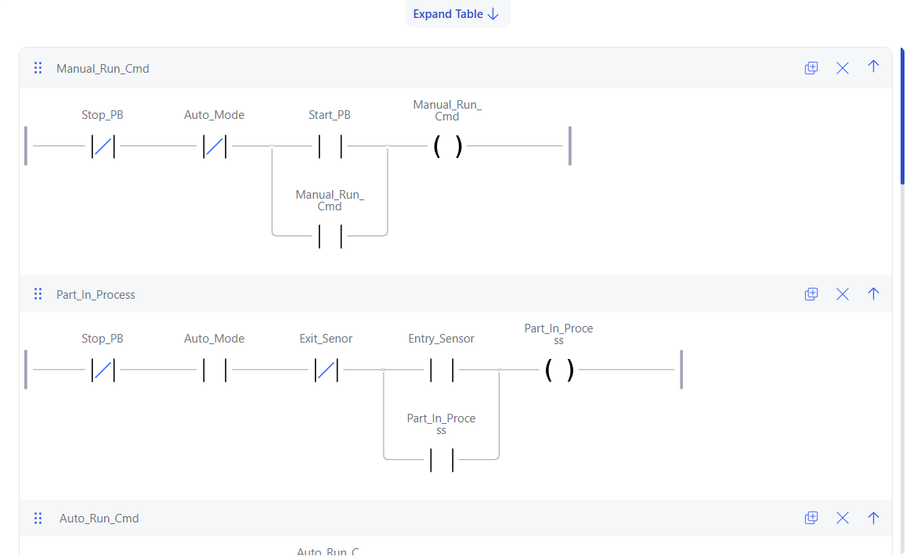
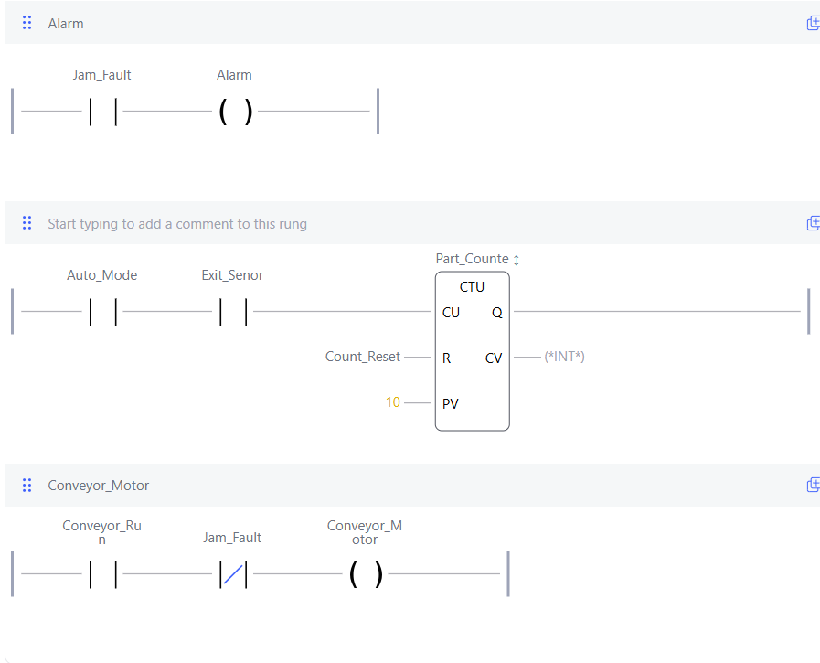
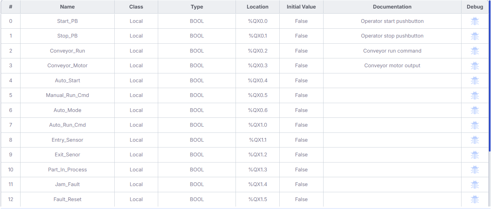
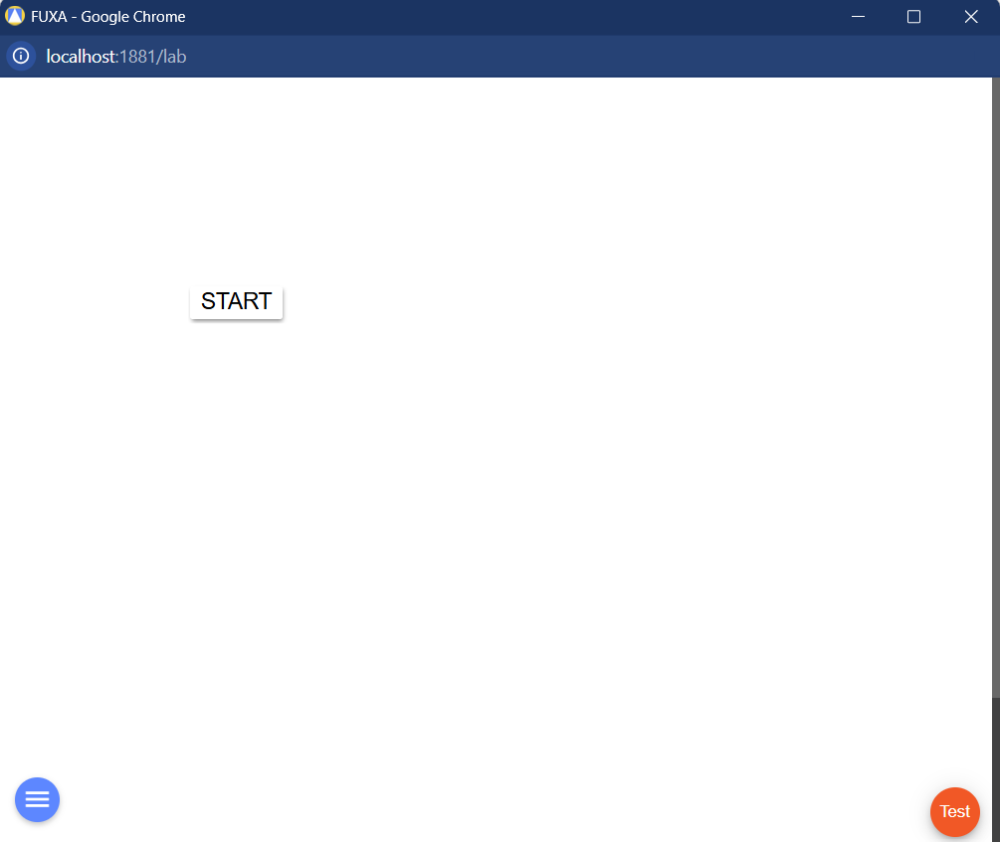
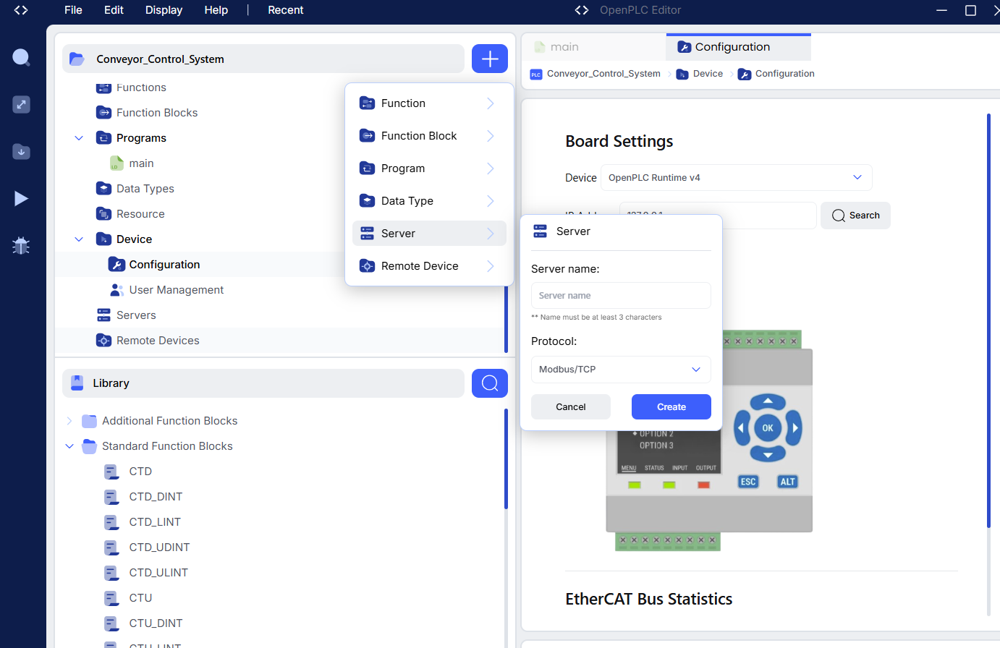
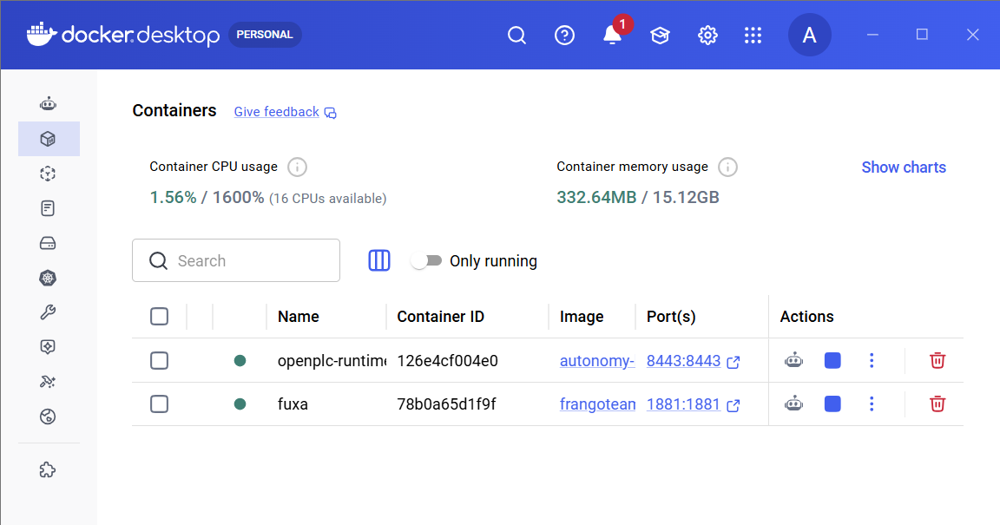

PROJECT OVERVIEW
Industrial Control Logic
The goal of this project was to build and test a PLC-style conveyor control system that demonstrates common industrial automation concepts rather than simply turning a motor on and off.
The system supports manual and automatic operating modes, start and stop behavior, conveyor run commands, entry and exit sensor logic, part-in-process state tracking, jam detection, alarms, production counting, and motor interlocks.
LADDER LOGIC
Main Conveyor Control

The primary ladder rungs establish the system's operating behavior. Stop conditions are evaluated before manual or automatic commands are allowed to control the conveyor.
Automatic operation uses entry and exit sensor states to track whether a part is currently in the conveyor process. Manual operation provides a separate run command while retaining the system's required permissive conditions.
FAULT DETECTION
Timer-Based Jam Logic

A TON timer is used to detect a condition that remains active longer than expected. If the simulated jam condition persists for the configured delay, the fault logic activates.
The resulting jam fault inhibits conveyor motor operation and drives the system's alarm behavior.
I/O & VARIABLES
PLC Variable Designations

PLC variables were organized to separate operator commands, sensor inputs, internal state variables, timers, counters, alarms, and motor outputs.
Maintaining clear variable designations made the ladder program easier to debug and made the relationship between field inputs, internal logic, and system outputs easier to follow.
OPERATOR INTERFACE
HMI Testing

The project also explored operator-side monitoring and control so that important PLC states could be observed through an HMI-style interface.
The interface provides a foundation for displaying sensor conditions, operating mode, conveyor state, production information, and fault status.
PLC RUNTIME
Runtime & Server Configuration

The ladder program was executed through an OpenPLC runtime environment, allowing the control logic to operate in a PLC-like software environment.
Runtime configuration provided experience beyond writing ladder rungs by requiring the control program to be loaded, executed, monitored, and tested as a complete system.
DEPLOYMENT ENVIRONMENT
Docker Runtime

Docker was used as part of the software environment supporting the PLC runtime and related control tools.
This added experience with containerized engineering software and helped separate the PLC runtime environment from the host system configuration.
IMPLEMENTED FEATURES
Control Functions
ENGINEERING TAKEAWAYS
What I Practiced
This project provided hands-on experience designing control logic using the same building blocks found in industrial PLC applications: permissives, interlocks, timers, counters, operating modes, state tracking, alarms, and fault handling.
It also demonstrated the importance of designing automation around abnormal conditions rather than only the normal operating sequence.